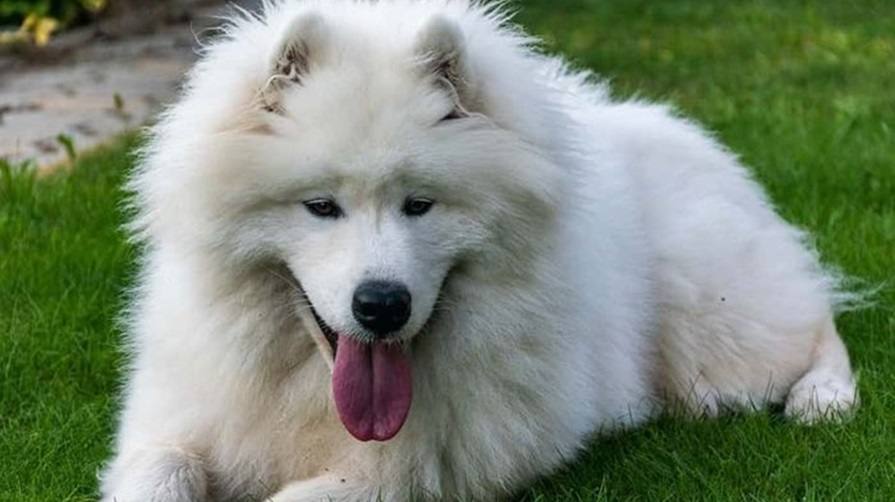
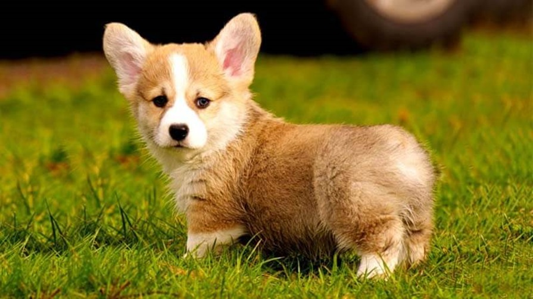
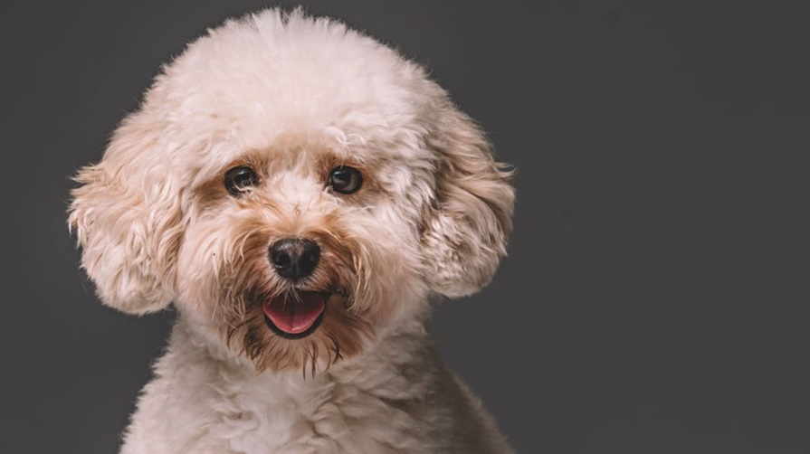
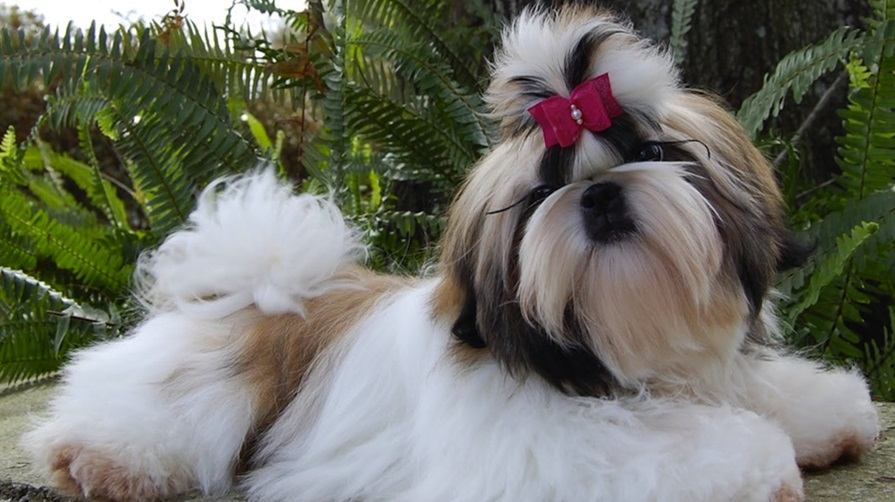
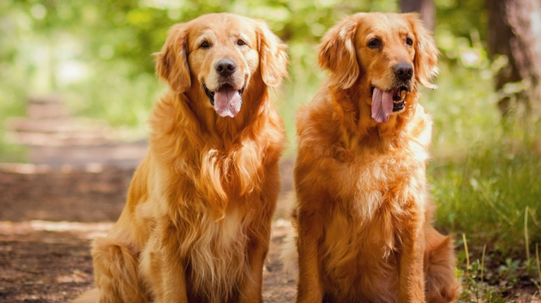
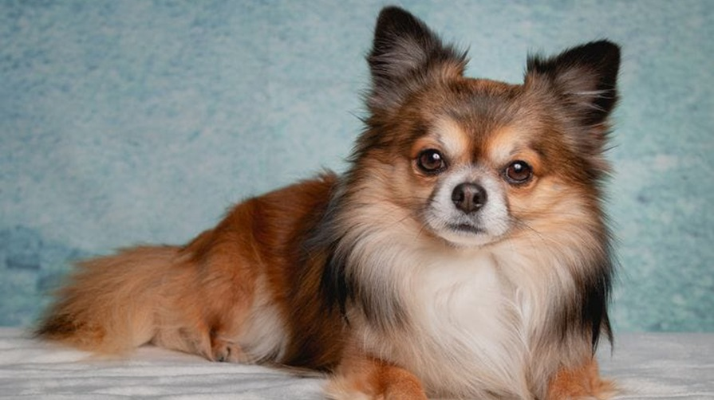

Rekomendasi Ras Anjing yang Cocok untuk Anda Pelihara

Memilih ras anjing yang tepat untuk dipelihara sangat penting untuk memastikan anjing Anda merasa nyaman dan bahagia. Berikut adalah beberapa rekomendasi ras anjing yang cocok untuk dipelihara, beserta detail karakteristiknya :
1. Samoyed
Samoyed adalah kucing yang ramah terhadap anak dan juga sering menjadi anjing penjaga rumah. Mereka dikenal dengan bulu panjangnya yang lembut dan kepribadiannya yang tenang. Samoyed cenderung bersikap ramah terhadap orang lain dan mudah beradaptasi dengan lingkungan baru.
2. Corgi
Corgi merupakan salah satu jenis anjing yang bisa Anda pelihara, terutama jika Anda memiliki rumah berukuran kecil. Kabarnya ia merupakan salah satu anjing pintar, yang bisa dengan mudah untuk Anda latih. Corgi kerap kali ikut berlomba karena kelincahannya.
3. Poodle
Poodle adalah anjing yang cerdas dan mudah dilatih. Mereka dikenal dengan bulu keritingnya yang indah dan kepribadiannya yang ramah. Poodle juga cenderung menjadi anjing yang setia dan loyal terhadap pemiliknya.
4. Shih Tzu
Shih Tzu memiliki bulu halus yang bisa tumbuh hingga panjang. Mereka dikenal sebagai anjing yang penyayang, dan mudah bergaul. Shih Tzu juga cenderung menjadi anjing yang tenang dan santai.
5. Golden Retriever
Golden Retriever adalah anjing yang ramah dan mudah dilatih. Mereka dikenal dengan bulu tebal dan kepribadiannya yang aktif. Golden Retriever juga cenderung menjadi anjing yang setia dan penuh kasih sayang terhadap pemiliknya.
6. Chihuahua
Chihuahua merupakan anjing yang paling kecil, namun cukup pintar bila Anda ingin melatihnya. Mereka dikenal dengan sifat yang mudah untuk beradaptasi dan aktif. Chihuahua juga cenderung menjadi anjing yang setia dan penuh kasih sayang terhadap pemiliknya.
Memilih ras anjing yang tepat sangat penting untuk memastikan anjing Anda merasa nyaman dan
bahagia. Selain itu, pastikan Anda memahami kebutuhan kesehatan dan perawatan ras anjing yang
Anda pilih sebelum memutuskan untuk memeliharanya.
Dengan memilih ras anjing yang tepat, Anda dapat menikmati kebahagiaan dan kebersamaan dengan
hewan peliharaan yang lucu dan ramah selama bertahun-tahun.